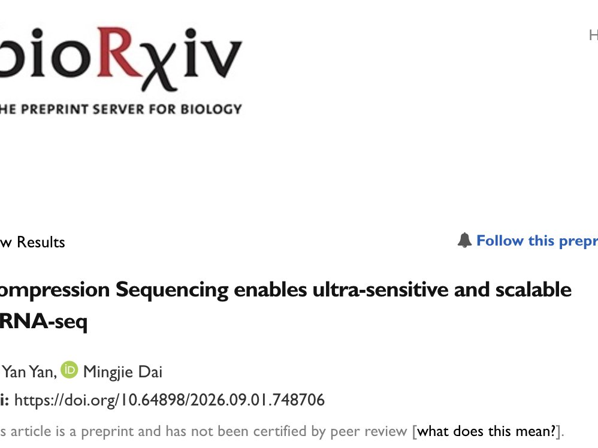
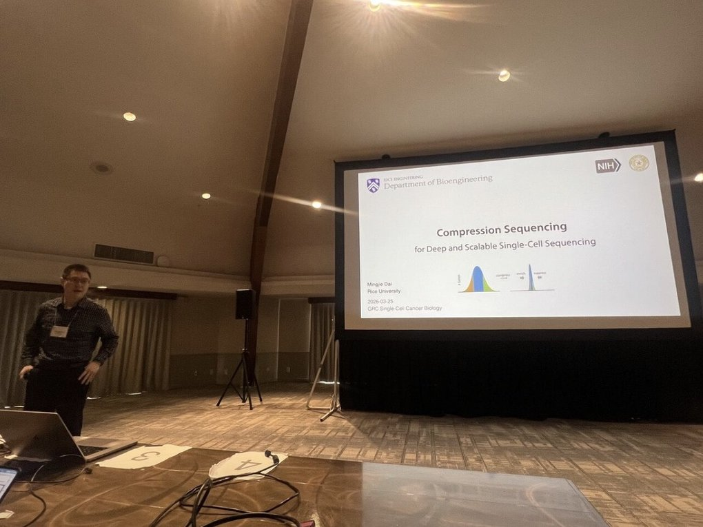
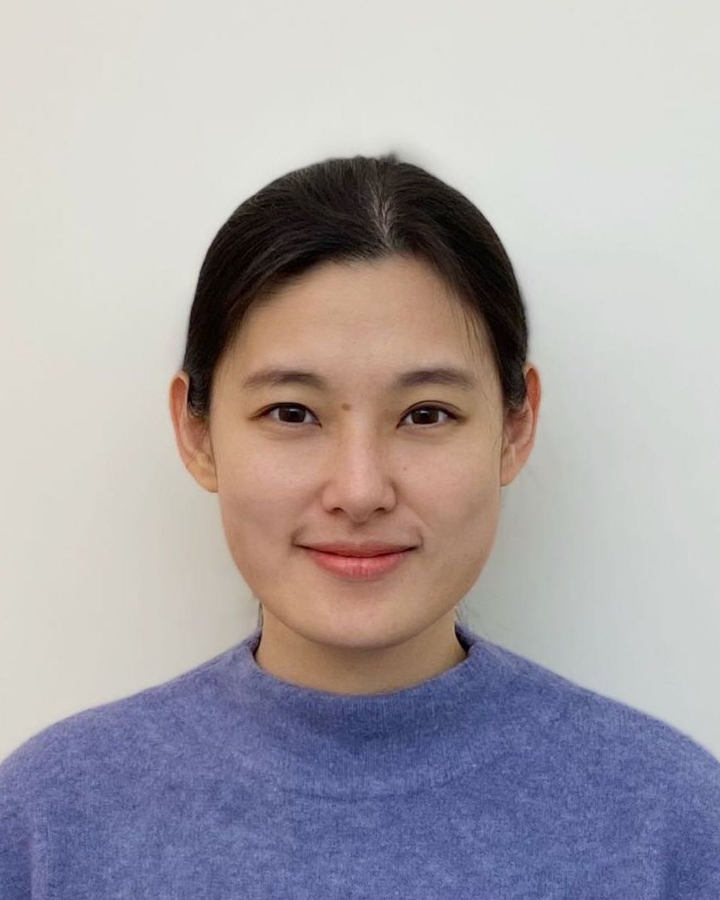
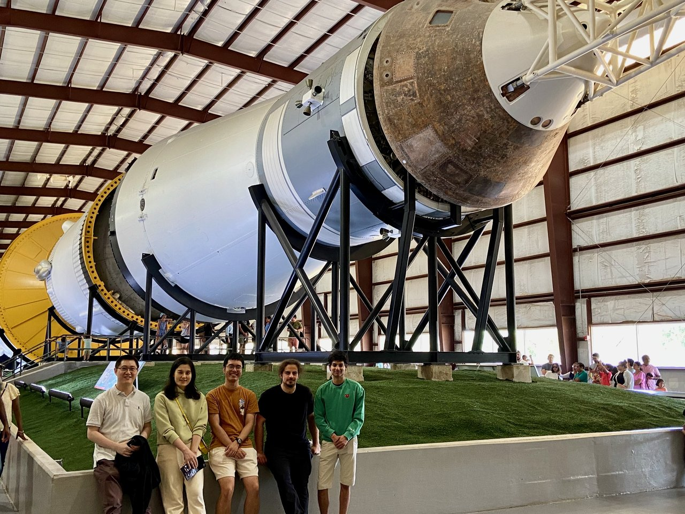

Our Compression-Seq manuscript is alive on bioRxiv!
https://www.biorxiv.org/content/10.64898/2026.09.01.748706v1
DAI LAB / NEWS
News, milestones, and recent activity.

https://www.biorxiv.org/content/10.64898/2026.09.01.748706v1

https://www.grc.org/single-cell-cancer-biology-conference/2026/

.
